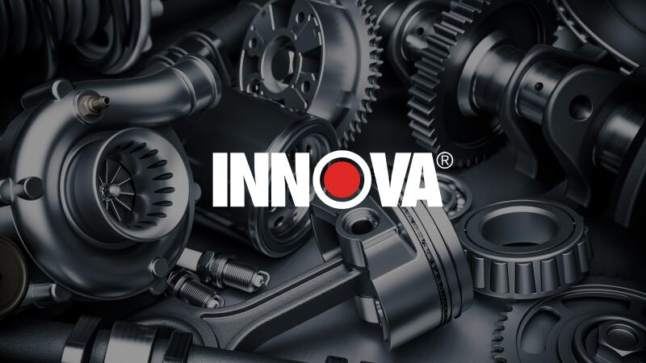
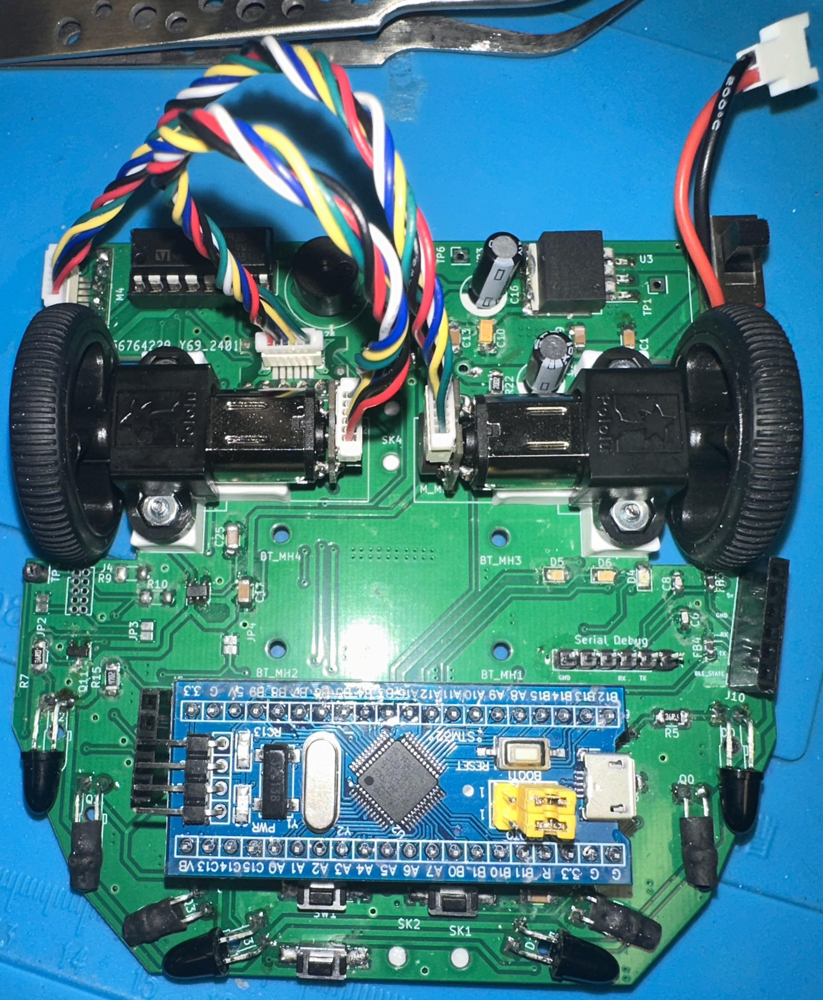
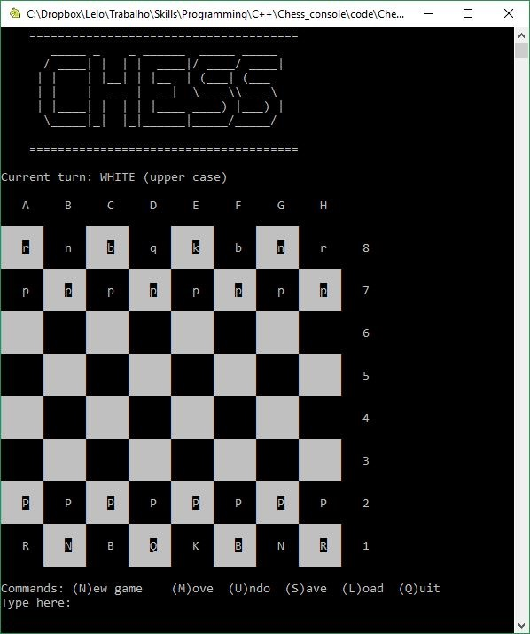
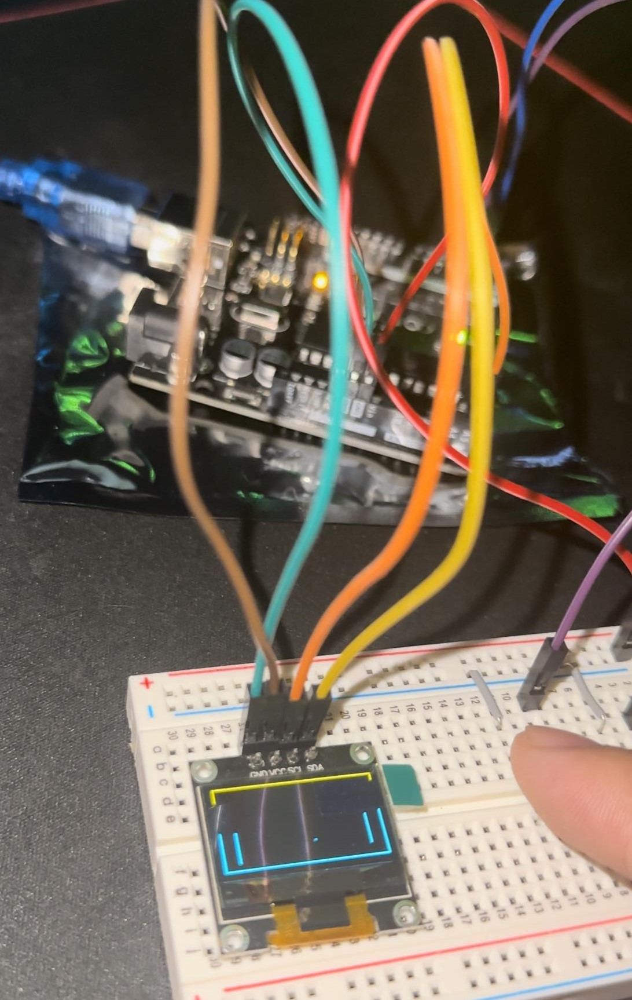
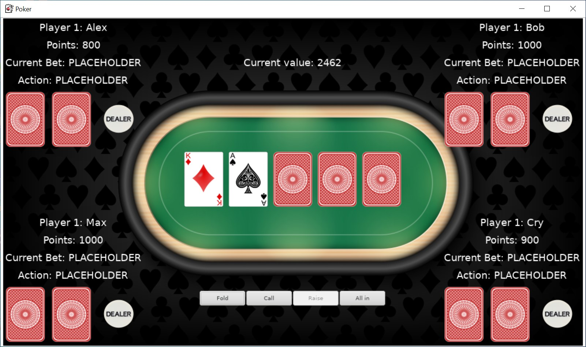

Intro
A letter from a System Validation Engineer...
There are, in my opinion, two types of people: those who seek careers that complement their innate abilities and those who take on challenging careers that they are enthusiastic about an put in a lot of work to succeed in them. Given that I had to overcome several obstacles to get to where I am now, I can relate to the latter. I love to solve a puzzling question with the most optimized solution.
I recall learning java in my first programming class in high school with a sense of doubt, wondering if I belonged there. Despite facing numerous late-night projects and underperforming on many of them relative to my standards, I refused to be discouraged. I was determined not to let my acceptance into this major go to waste. The satisfaction of resolving those elusive segmentation faults, often after hours of effort, fueled my persistence. This resilience has paid off, as I will be graduating from the University of California, Irvine with a B.S. in Computer Engineering ahead of expectance. My primary focus has been on Embedded Systems development, which involves an in-depth exploration of Device Driver implementation.
After completing my first internship and a relatively long job search (5 months), I landed a position at Innova Electronics Corporation as an Embedded System Engineer Intern. I currently work on the 5610 OBD2 Scan Tool project writing software that is related to eMMC (embedded MultiMediaCard) performance optimization. How does the host device communicate with the data transmitted from the vehicle? How fast is the data being transmitted to the microprocessor? What if the processor just resets randomly? With a team of experts, we help answer and execute these challenging questions.
I am in the early stages of my career, bringing with it a strong motivation and passion for learning new technologies. I am currently focused on entering the Embedded Systems domain, dedicating myself to personal projects and deepening my understanding of core components such as the Kernel and Bootloader.
Work

Innova Electronic Corporation
Embedded Systems Engineer Intern
- Developed the 5610 and 5210 OBD2 Scan Tools, using C, leveraging various third-party libraries and APIs for enhanced diagnostic capabilities.
- Designed and implemented a testing framework for optimizing read/write performance for an embedded MultiMediaCard (eMMC) on the Renesas R7FA6M5BH3CFC microcontroller using C, increasing throughput performance by 78%.
- Revised the File Allocation Table (FAT) file system database to minimize the behavior of fragmentation by allocating contiguous space for files to improve stability.
- Utilized J-Link and IAR Embedded Work Bench to modify file handles, manage buffer pointers, and ensure accurate error handling and logging in storage media operations.
- Integrated CI/CD pipelines through GitLab, facilitated comprehensive unit testing, and maintained clear, thorough documentation.

SigmaTronix
Electrical Test Engineer Intern
- Performed electrical and functional tests utilizing a Multimeter, Teradyne Optima 7300 Inspection System, and MyData TP9-UFP for the development of 100+ PCBs for Intel, MX Imaging, Relativity, and Marvell.
- Facilitated the fabrication process by leading PCB Assemblers and Quality Control Technicians, overseeing a comprehensive Bill of Materials, and effectively managing time constraints while addressing design defects for customer satisfaction.
- Performed SMD soldering and soft soldering in preparation for electrical testing using Bed of Nails testing and X-ray imaging systems.
Resume
Download my resume using the button below...
Download
Projects

Institute of Electrical and Electronics Engineers - Micromouse (STM32)
Micromouse is a year-long project focusing on the development of an autonomous micromouse robot programmed in C++. The goal of the project is to create a robot capable of efficiently navigating through complex mazes using advanced algorithms and sensor integration. The Github repository contains the Software, PCB schematics, Firmware, and documentation necessary to build and program the micromouse.

Chess Game in C
In a team of 5, I've developed a Chess game in C, designed for the Linux terminal with an customized integrated graphic user interface. The game features a clean and inuitive interface, allowing players to engage in class chess matches with ease. It supports standard chess rules and offers a visually appealing board with interactive gameplay elements.

Basic platform game (ATmega32)
Utilizing an Atmega microcontroller, an I2C OLED display, and push buttons, my colleague from UCSB (a Computer Engineering major) and I developed a compact game inspired by one of my favorite childhood games, Table Tennis. I believed that engineering a project based on a sport I had competitively engaged in for years would be a particularly rewarding endeavor. The game features a randomly generated map and ball's speed increases as the game advances. The code continuously monitors input from the push button to adjust the paddle's position. This project has been one of the most intriguing and fulfilling passion projects I have undertaken.

Poker Game in C
I developed a comprehensive Poker game in C, emphasizing a graphical user interface (GUI) for an intuitive player experience. The project employs a client-server software architecture using the TCP/IP communication protocol via sockets, enabling seamless multiplayer functionality. It incorporates multithreading to ensure efficient and concurrent gameplay. Extensive use of git for version control, along with rigorous unit and system testing, underlines the robustness and reliability of the software. This project showcases my expertise in C programming, network communication, and software development best practices.